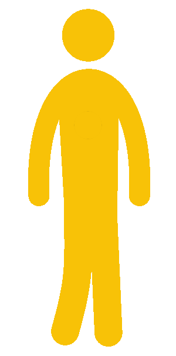

Slogan publicitàri del Rafa
KYA dit que la tecnologia serveixi per mantenir-nos immòbils?
Skyline
Cotxe
Persona

Peu de pàgina
©️ar-less Urbà 2029
Botons per aumentar i reduit el text
Augmentar el Text
Disminuir el Text